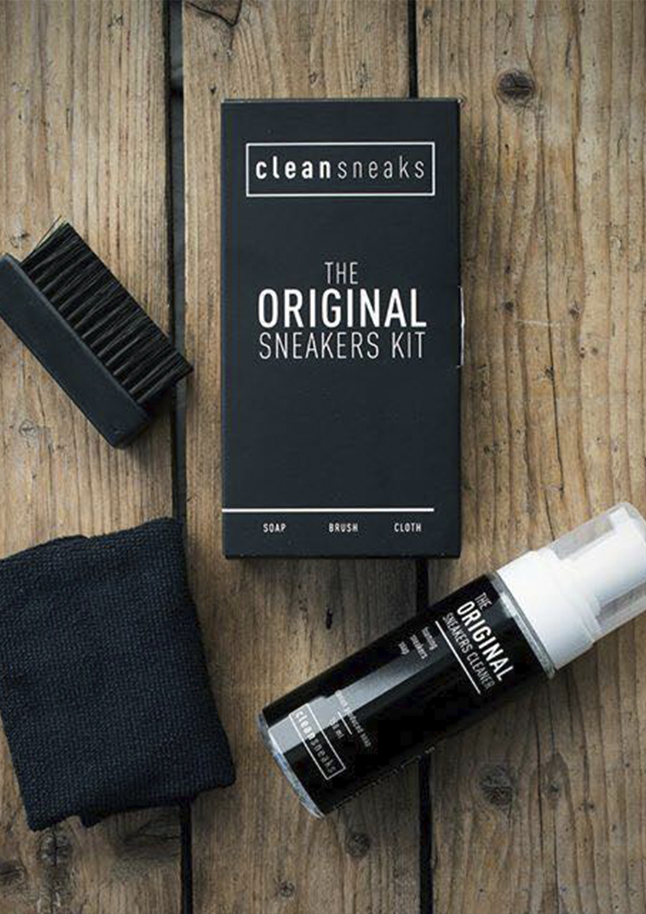
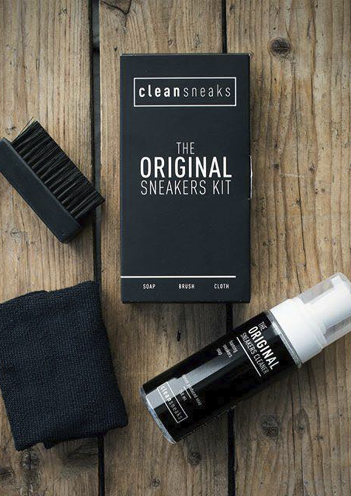

Hvorfor Clean Sneaks?
Når du går i byen, tager du rent og pænt tøj på. Du hopper i din nystrøgede skjorte, dit hår sidder som det skal, makeuppen spiller og du træder i dine beskidte og lugtende sneaks - do you see the point? Hvorfor gå på kompromis med sine sneaks,når der er styr på alt andet? Hos Clean Sneaks er vi passionerede omkring sneaks og vil gøre op med de beskidte af slagsen. Dit outfit siger en hel del om hvem du er - det gør dit sneak game også.

Hvorfor Clean Sneaks?
Når du går i byen, tager du rent og pænt tøj på. Du hopper i din nystrøgede skjorte, dit hår sidder som det skal, makeuppen spiller og du træder i dine beskidte og lugtende sneaks - do you see the point? Hvorfor gå på kompromis med sine sneaks,når der er styr på alt andet? Hos Clean Sneaks er vi passionerede omkring sneaks og vil gøre op med de beskidte af slagsen. Dit outfit siger en hel del om hvem du er - det gør dit sneak game også.
- Dennis, Clean Sneaks Århus
”Vi vil gerne sørge for at ingen render rundt med beskidte sneaks. Hvorfor er det anderledes hvordan du behandler et par sneaks modsat en hvid skjorte. Vil du tage på arbejde i en beskidt skjorte? Det skal være lige så vigtigt at have rene sko på, som rent tøj. Vi kæmper mod ligegyldigheden omkring sneakers. ”
- Dennis, Clean Sneaks Århus

Renseri eller rens selv
- you choose!
Hos Clean Sneaks vil vi gøre op med de beskidte sneaks. Om du er typen der renser selv eller lader andre gøre arbejdet, så har vi løsningen. Hop ind på vores webshop og tjek vores mange renseprodukter ud, eller gør brug af et af vores renserier i enten Silkeborg eller Århus. Lige meget hvilken løsning du er til garanterer vi Clean Sneaks.